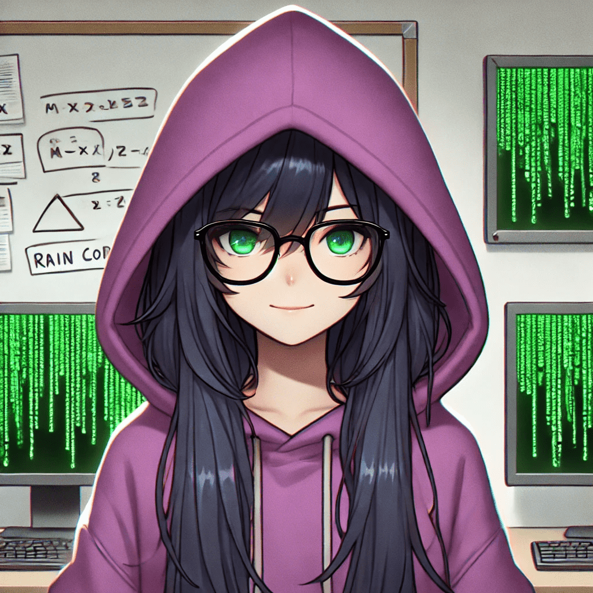

Alice Williams
Research Assistant
Blending computation with human cognition, researching machine learning at the Central Washington University Visual Knowledge Discovery and Imaging Lab.
"I believe in intuition and inspiration. Imagination is more important than knowledge. For knowledge is limited, whereas imagination embraces the entire world, stimulating progress, giving birth to evolution. It is, strictly speaking, a real factor in scientific research.”
― Albert Einstein
View My CV